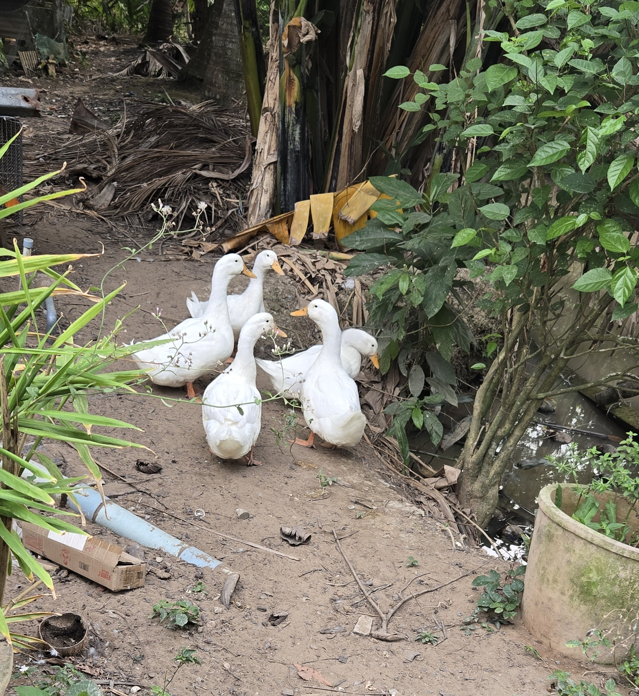
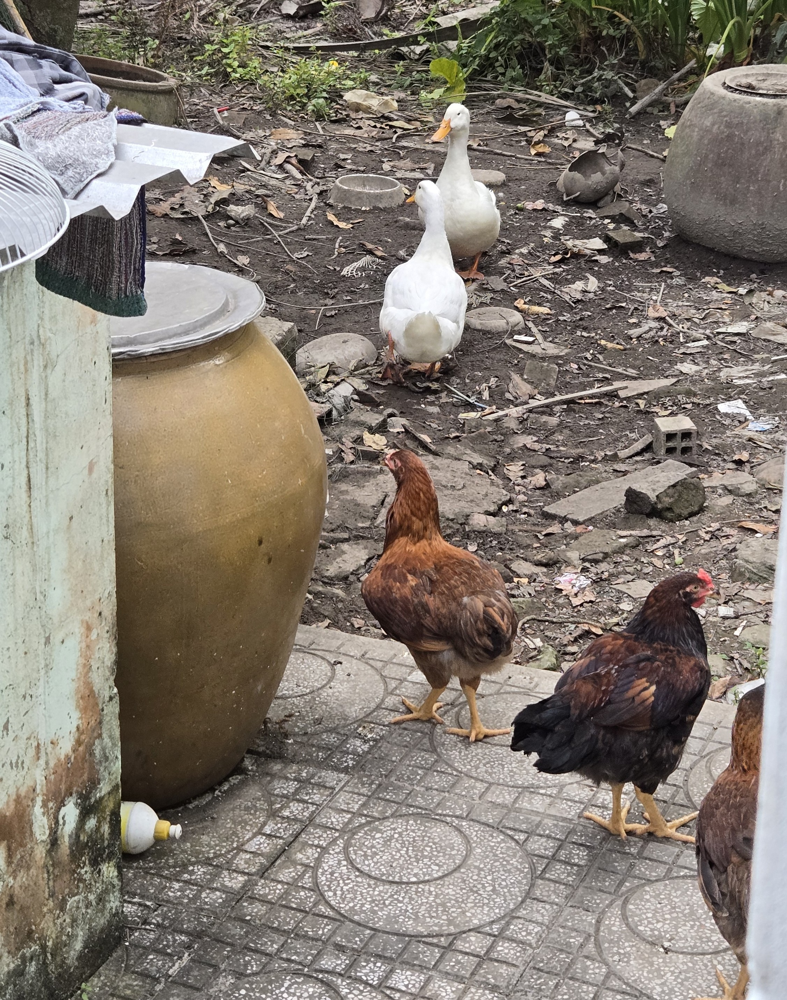
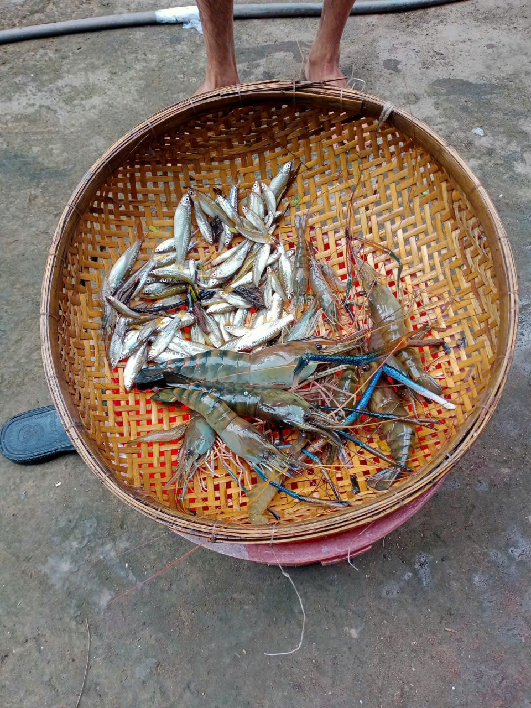

En plus des poules, il y a également des canards.

Ces canards sont là pour leurs œufs seulement, ce sont donc en réalité des canes. Malheureusement, 3 d'entre elles ne sont plus de ce monde, certains voisins avaient peut être un peu trop faim.
Une bonne chose, c'est que les canes et les poules cohabitent en paix, pas besoin de les séparer.

Ces canes ont la chance d'avoir à leur disposition un étant dans lequelle elles peuvent barboter. Mais pas seulement, elles ont également accès un buffet, puisque cet étand habrite différentes espèces, dont des poissons ou encore des gambas. De quoi se faire un festin de roi.
